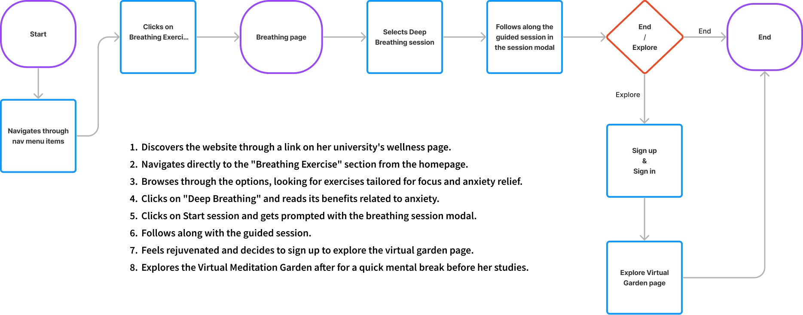
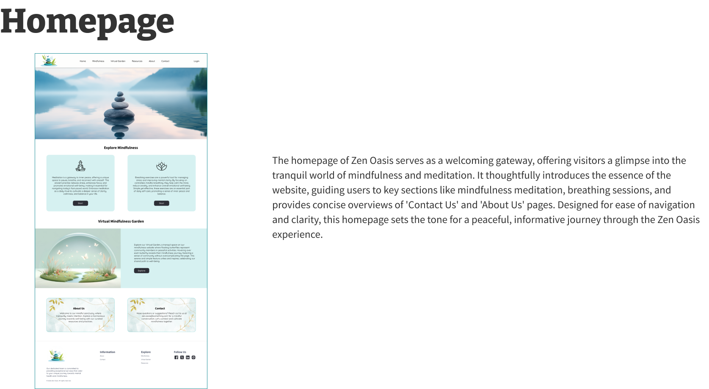

Case Study: Zen Oasis - Your Online Mindfulness Garden
Project Overview
Zen Oasis emerged from a vision to create a digital sanctuary that addresses the escalating stress levels among professionals and individuals seeking a serene escape into mindfulness and self-care. The platform aspires to blend the tranquility of nature with meditation and relaxation activities, empowering users to enhance their mental well-being and embrace the practices of mindfulness.
Duration : 3 weeks
Role : UX/UI Designer, Researcher
Tools Used : Figma, Adobe Stock, Midjourney
Objective
The primary goal was to design a user-centric website that feels like a tranquil garden oasis, offering a variety of mindfulness practices, interactive activities, and educational resources. The target audience includes stressed professionals, mindfulness enthusiasts, and beginners in self-care, necessitating a design that is both inviting and intuitive.
Research
Initial research focused on understanding the needs of our target users through surveys and interviews. Key insights revealed a desire for:
- A peaceful, easily navigable online environment.
- Varied, engaging mindfulness and meditation resources.
- Interactive components to foster a sense of community and personal growth.
- Accessible educational content for all levels of mindfulness experience.
Target Audience : Stressed Professionals, Mindfulness Enthusiasts, Beginners in Self-Care
Key Features :
- Virtual Garden Environment with a sense of community
- Meditation and Sessions
- Interactive Activities
- Educational Resources
Planned Text Resources :
- OpenAI ChatGPT: ChatGPT is an AI-powered language model developed by OpenAI, ideal for generating sample text for various website sections.
- Wikipedia: Wikipedia serves as a valuable resource for gathering informative content on mindfulness, meditation, and related topics.
- PsychCentral: PsychCentral provides expert insights and articles on mental health, mindfulness, and well-being that can enrich the website's content.
- Medium: Medium's platform offers a wealth of user-generated articles and resources on mindfulness, meditation, and personal development, which can be referenced for content creation.
Competitive Analysis

Logo Drafts
Iconography Ideas
Typography
Color Palette
Buttons
Imagery Ideas
Branding Decision
The branding for the Zen Oasis website aligns with the project's aim of providing a tranquil online space for mindfulness and meditation.
Logo : The logo, thoughtfully designed with elements like balancing stones, leaves, and a butterfly, epitomizes a virtual meditation garden. It encapsulates the essence of a serene oasis, where users can immerse themselves in a peaceful and mindful experience.
Color Palette : The selected color palette is at the heart of the branding strategy. It prominently features soothing and minimalistic colors, including BCE0EA, 24929B, 608888, E06546, 513333, and 2D2D36. These colors have been thoughtfully chosen to evoke a profound sense of mindfulness and tranquility. BCE0EA and 24929B represent the serene sky and calming waters, while 608888, E06546, 513333, and 2D2D36 bring forth the grounding influence of earth and nature. These colors collectively set the tone for the website, creating an environment that promotes relaxation, self-reflection, and inner peace.
Typography : The chosen fonts like Source Sans 3, EB Garamond, Quicksand, and Work Sans give a modern, yet approachable feel. Additionally, Decorative Fonts like Clicker Script add warmth and personalization.
Iconography : Mindfulness-related icons, thoughtfully generated from Midjourney AI Prompts, are seamlessly integrated to symbolize and enhance the website's core themes. Additionally, I will be utilizing icons from trusted sources like Flaticon and Font Awesome.
Imagery : Utilizing Midjourney AI Prompts, the website's imagery, including elements of meditation, balancing stones, and leaves, specifically caters to mindfulness themes, further enhancing the website's uniqueness.
Persona #1 Jr. Software Developer
Roy Garza
Age: 28
Occupation: Jr. Software Developer
Education: Bachelor’s in Computer Science
Challenges & Pain points
- Overwhelmed by multitasking at work.
- Struggling with the isolation of a predominantly digital job.
- Difficulty disconnecting from tech during relaxation attempts.
- Skeptical about the effectiveness of online mindfulness practices.
- Frustrated by overly complex meditation apps.
Bio
Roy, a recent university graduate, has dived headfirst into the tech industry. He often feels the strain of long hours at his startup job, and he's seeking a way to introduce moments of calm into his hectic day. Between debugging and team meetings, Roy cherishes his short breaks and seeks to make the most out of them.
“In a world of ones and zeros, I'm searching for that moment of just 'being'."
Personality Traits
Hardworking: 78%Stresser: 80%Organized: 85%
Goals & Motivations
- Find quick relaxation techniques for his brief work breaks.
- Explore different meditation practices without a steep learning curve.
- Understand the mechanics behind stress and relaxation.
- Engage in a digital space without the usual tech distractions.
- Connect with others on the same relaxation journey.
Tech Proficiency : Advanced. He's comfortable around most digital platforms.
Scenario : Seeking a mindful break after a long debugging session.
User Flow #1
User Flow for Roy Garza, 28
Task: Finding a guided meditation to reduce workplace stress.
Persona #2 University Student
Emma March
Age: 23
Occupation: University Student
Education: Masters in International Relations
Challenges & Pain points
- Anxiety over academic performance.
- Feels disconnected in large, impersonal university lectures.
- Struggles with maintaining a balanced life.
- Often overwhelmed by her future career choices.
- Difficulty sleeping due to an overactive mind.
Bio
Emma is an overachieving international relations student. With a pile of readings, group assignments, and research, her study sessions often stretch into the night. As she juggles her academic responsibilities with her part-time job, Emma seeks a respite from her rigorous schedule.
"While navigating the chapters of my life, I need a space to breathe, to find my centre."
Personality Traits
Hardworking: 80%Stresser: 90%Organized: 65%
Goals & Motivations
- Discover mindfulness as a means to better focus in her studies.
- Engage in short meditation sessions between classes or study breaks.
- Connect with a community that isn't centered around academic stress.
- Learn techniques to manage her anxiety during exam periods.
- Utilize breathing exercises to calm pre-presentation nerves.
Tech Proficiency : Moderate. Primarily uses academic platforms and social media.
Scenario : Trying to wind down after a long study session at the library.
User Flow #2
User Flow for Emma March, 23:
Task: Learn about different breathing exercises to help with anxiety.
Persona #3 Marketing Manager
Clara Wright
Age: 38
Occupation: Marketing Manager
Education: Master's in Business Administration
Challenges & Pain points
- High-stress levels from managing a team and client expectations.
- Feels disconnected from personal wellness goals.
- Struggles to find "me-time" in her packed schedule.
- Desires guidance without the time commitment of physical classes.
- Occasionally feels burned out due to work pressures.
Bio
As a marketing manager in a leading firm, Clara constantly battles tight deadlines and high-pressure campaigns. She often misses her yoga classes due to unplanned work emergencies. Eager to incorporate mindfulness into her day, she's looking for quick and effective online solutions.
"Amidst pitches and presentations, I'm seeking a silent sanctuary, even if it's just for a few minutes."
Personality Traits
Hardworking: 90%Stresser: 95%Organized: 50%
Goals & Motivations
- Reintroduce moments of tranquility into her daily routine.
- Utilize mindfulness techniques to improve her team leadership.
- Connect with like-minded professionals on the path of mindfulness.
- Integrate breathing exercises before important client meetings.
- Access resources that blend professional growth with personal well-being.
Tech Proficiency : Intermediate. Regularly uses professional tools and occasionally explores wellness apps.
Scenario : Taking a mindfulness break before brainstorming the next marketing campaign.
User Flow #3
User Flow for Clara Wright, 38
Task: Find resources on the benefits of mindfulness for mental well-being.
Site-Map - Zen Oasis
Low Fidelity Wireframes
High Fidelity Designs
Figma Prototype
Reflection
Embarking on the transition from low-fidelity to high-fidelity wireframes in my website
project was a deeply educational and transformative experience. Moving from basic sketches to
detailed, interactive designs was a pivotal moment in my journey as a designer. This phase allowed
me to delve into the finer aspects of design, such as color schemes, typography, and UI components.
I gained a profound understanding of how visual aesthetics influence user experience, learning the
importance of color and typography in setting the mood and enhancing readability, and the role of UI
details in creating an intuitive and user-friendly interface.
Developing clickable prototypes was another significant learning curve. It brought my static designs
to life, giving me a realistic sense of how users would interact with the website. This step was
crucial in highlighting the importance of intuitive navigation and efficient user flow. It taught me
to anticipate user needs and behaviors, pushing me towards a more thoughtful, user-centered design
approach.
To Improve
- Advanced Prototyping: Develop more detailed and interactive prototypes to better simulate user experiences.
- Animations: Learn and integrate more complex animations to enhance user engagement and website aesthetics.
- Effective Time Management: Implement a structured schedule with allocated time for each design and development task.
- Increased Iterations: Build more time into the project timeline for revisions and iterations based on feedback.
- Active Feedback Incorporation: Seek and apply feedback more actively from various sources, including professors, and classmates.
- Contingency Planning: Prepare backup plans and flexible timelines to accommodate unexpected circumstances like illness.